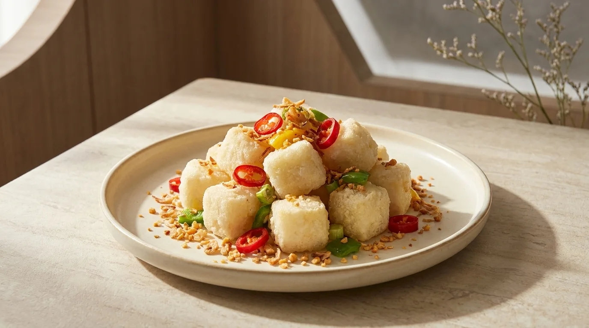
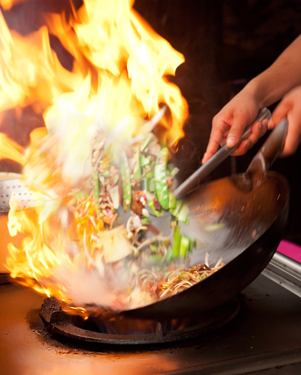
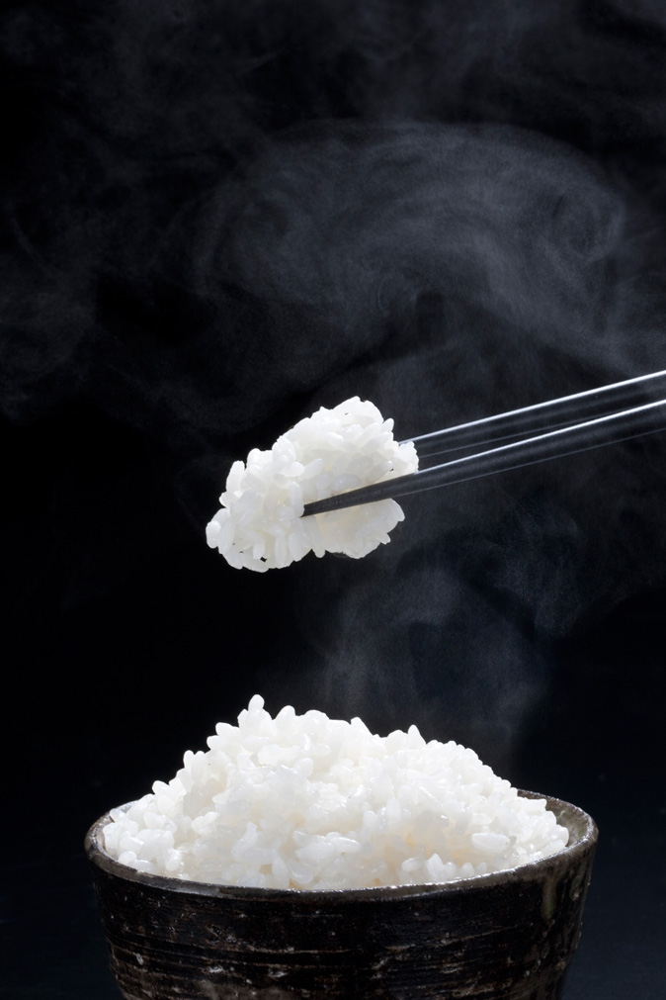

The Anise philosophy
A feast for every sense.
Rooted in the enduring traditions of Chinese cuisine, our cooking begins with three essentials: 色, 香, 味 — visual, aroma and taste.
Explore our philosophy
色 · Visual
The first impression.
Before the first taste, a dish should draw you in. Fresh ingredients and thoughtful presentation bring colour, texture and beauty to the table — an invitation to savour what follows.

香 · Aroma
The anticipation.
Fragrance is the quiet promise of a memorable meal. With fresh ingredients and considered technique, we bring out the natural aromas that make each dish irresistible.

味 · Taste
The lasting pleasure.
Flavour is where it all comes together. Precise timing, skilled cooking and heart transform fresh ingredients into dishes of balance and depth, made to be enjoyed to the last bite.
From our kitchen to your table
Made with care.
Enjoyed at home.
Our promise is simple: to bring the pleasure of beautifully prepared Chinese food to your table, wherever you choose to enjoy it.